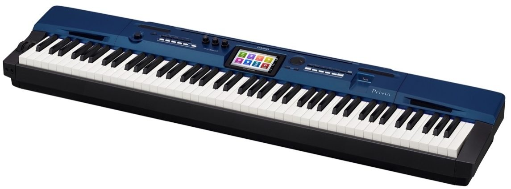
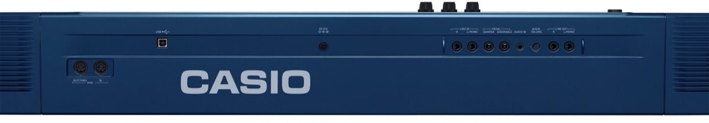

Casio Privia PX-560 Review: The Affordable Stage Piano That Does it All!
By Joss Gantley May 25th 2019
I recently purchased this competitively priced stage piano to replace my Yamaha DGX which is commonly known in the band as "The Beast". The Yamaha served me well, I've gigged it for 7 years but at 46lbs I decided it was time to get something more light weight. Years ago, I would have never even dreamt of buying a Casio but I have to say this is a great stage piano for the money! Casio have come a long way in terms of quality and technology, while still remaining affordable. This Casio Privia PX-560 review is to show what this keyboard has to offer and to share my personal experience with it so far.
On first impression, it actually looks pretty sharp. The blue colour really does add some character, differentiating it from the other Privia models. It weighs 26.5 lbs, making it almost half the weight of my Yamaha. It's also very portable in terms of size too. These are important factors for someone who gigs regularly, or even if you just want to move it from place to place. I bought it with the optional furniture stand so I bring it home from time to time, 4 screws and it's a set up. Most of the time I use a portable stand for gigging and rehearsals but it is nice to have that versatility. It does also connect to the optional SP-33 Casio pedal unit as part of the furniture stand which is nice. For gigging I use an M-Audio sustain pedal. The portable sustain pedal that comes with the Casio is okay, there's just not a lot of friction so it tends to move around a lot, especially on stage. This is a normal occurrence with any new keyboard I've ever bought though, the included portable sustain pedals are never fantastic. In terms of the layout of the physical controls, it's very easy to understand and use. Most of the features are controlled on the touch screen.
At first, I thought the touch screen interface would be complicated and difficult to use. But in reality it's very easy to comprehend. I'm sure that I've only scratched the surface on what this thing can do, but I'm really pleased with its capabilities in terms of what I need it to do. One thing I did worry about was the quality of the sounds compared to what I'm used to (Roland and Yamaha). But I was surprised to see Casio has come a long way in this department. They've definitely put some considerable effort into the piano sounds and the sounds made with what they call "AiR technology". With 256 polyphony, the Casio is very dynamic. In fact, the Yamaha CP88 stage piano only has 128 polyphony and it's about twice the price of the Casio! The range of sounds is also very good, I haven't used much organ sounds because I have a separate board for organ sounds. I really dig the EP sounds, and there's lots of synth sounds to choose from. You can even customize the sounds using hex layers.
Something that I really like is that you can have 2 voices layered and split the board at the same time. So for example, you could have a bass layered with strings on the lower split range, and then you could have a piano layered with a synth on the higher split range. The great thing is that you can deactivate any of the 4 voices by just pressing a button on the screen, which handy if you need to change something in the middle of a song. Another thing I was impressed with, and also relieved about was that the sustain will effect the lower split range and the higher split range. I could not find an answer to whether or not that was the case online before purchasing it, but I'm glad it is! That used to drive me mad when I was using my DGX. I'd have a piano on the higher split range and a synth on the lower split range, and the synth was always really choppy because there was only sustain on the higher split range. The Casio has solved that problem for me!
The textured keys on this keyboard are amazing, and it is also weighted like a real piano. The lower range keys are heavier weighted then the higher range. This is probably my favourite thing about this piano. Lately I've been learning to improvise a lot of boogie woogie style piano, and that real piano feeling really enhances my ability to play this kind of music.
These are all the reasons why I love this piano. It has all the other features that you would expect like MIDI in/out, recording capabilities, and USB drive. Like every other keyboard it has an accompaniment with different styles. I personally haven't used these because I'm in a band so I don't have any use for it. Something that's pretty cool is you can plug in another keyboard or a microphone and it will play through the Casio's speakers. This would be very handy if you have another keyboard that doesn't have its own speakers, or you are playing a solo gig at a venue where you don't need to be too loud. Another nice feature is duet mode, you can split the keyboard so that both lower key range and the higher key range are the same, giving you essentially 2 small pianos on one keyboard if you want to play simultaneously with a friend.
The best part about this stage piano is the price. The Casio Privia PX-560 will only run you $1199.99 on Zzounds. I am a happy owner of this great digital stage piano and if you are considering it, I would not hesitate to buy it! The comparable stage pianos from other manufacturers will not come at this price, and will in most cases not even have as many great features as the Casio. The thing I love about this Piano is that it does everything. It looks great in the living room on its furniture stand, and its a great stage piano that I can gig with. When it comes to recording I can tweak all the sounds how I want them with a wide range of effects and hex layers, if I want to get technical. It's a versatile instrument that is very user friendly in all aspects. I hope you enjoyed reading my Casio Privia PX-560 review!